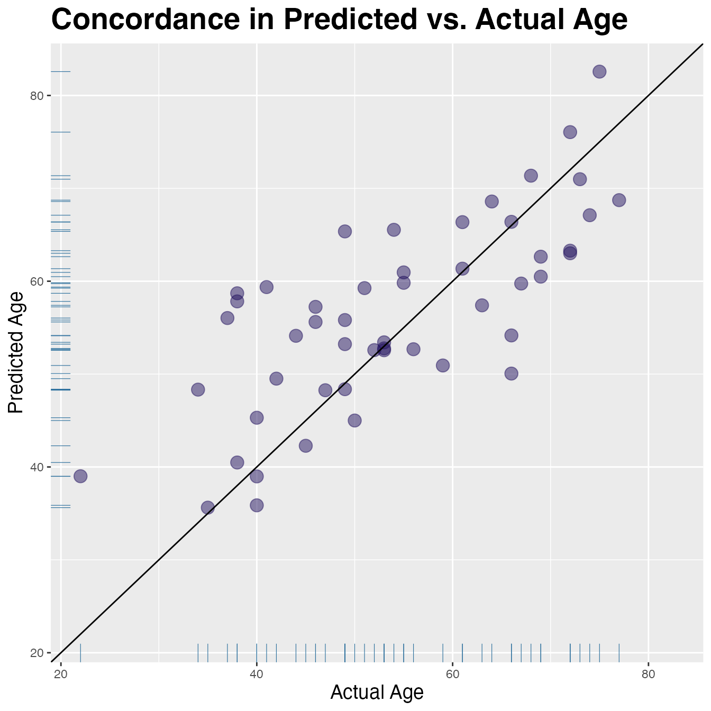

Linear Regression
Stu Field, Standard BioTools, Inc.
Source:vignettes/articles/stat-linear-regression.Rmd
stat-linear-regression.RmdRegression of Continuous Variables
Although targeted statistical analyses are beyond the scope of the
SomaDataIO package, below is an example analysis that
typical users/customers would perform on ‘SomaScan’ data.
It is not intended to be a definitive guide in statistical analysis
and existing packages do exist in the R ecosystem that
perform parts or extensions of these techniques. Many variations of the
workflow below exist, however the framework highlights how one could
perform standard preliminary analyses on ‘SomaScan’ data.
Data Preparation
# the `example_data` .adat object
# download from `SomaLogic-Data` repo or directly via bash command:
# `wget https://raw.githubusercontent.com/SomaLogic/SomaLogic-Data/main/example_data.adat`
# then read in to R with:
# example_data <- read_adat("example_data.adat")
dim(example_data)
#> [1] 192 5318
table(example_data$SampleType)
#>
#> Buffer Calibrator QC Sample
#> 6 10 6 170
# prepare data set for analysis using `preProcessAdat()`
cleanData <- example_data |>
preProcessAdat(
filter.features = TRUE, # rm non-human protein features
filter.controls = TRUE, # rm control samples
filter.qc = TRUE, # rm non-passing qc samples
log.10 = TRUE, # log10 transform
center.scale = TRUE # center/scale analytes
)
#> ✔ 305 non-human protein features were removed.
#> → 214 human proteins did not pass standard QC
#> acceptance criteria and were flagged in `ColCheck`. These features
#> were not removed, as they still may yield useful information in an
#> analysis, but further evaluation may be needed.
#> ✔ 6 buffer samples were removed.
#> ✔ 10 calibrator samples were removed.
#> ✔ 6 QC samples were removed.
#> ✔ 2 samples flagged in `RowCheck` did not
#> pass standard normalization acceptance criteria (0.4 <= x <= 2.5)
#> and were removed.
#> ✔ RFU features were log-10 transformed.
#> ✔ RFU features were centered and scaled.
# drop any missing Age values
cleanData <- cleanData |>
drop_na(Age) # rm NAs if present
summary(cleanData$Age)
#> Min. 1st Qu. Median Mean 3rd Qu. Max.
#> 18.00 46.00 55.00 55.64 67.00 77.00Linear Regression
We use the cleanData, train, and
test data objects from above.
Predict Age
LinR_tbl <- getAnalyteInfo(train) |> # `train` from above
select(AptName, SeqId, Target = TargetFullName, EntrezGeneSymbol, UniProt) |>
mutate(
formula = map(AptName, ~ as.formula(paste("Age ~", .x, collapse = " + "))),
model = map(formula, ~ stats::lm(.x, data = train, model = FALSE)), # fit models
slope = map(model, coef) |> map_dbl(2L), # pull out B_1
p.value = map2_dbl(model, AptName, ~ {
summary(.x)$coefficients[.y, "Pr(>|t|)"] }), # pull out p-values
fdr = p.adjust(p.value, method = "BH") # FDR for multiple testing
) |>
arrange(p.value) |> # re-order by `p-value`
mutate(rank = row_number()) # add numeric ranks
LinR_tbl
#> # A tibble: 4,979 × 11
#> AptName SeqId Target EntrezGeneSymbol UniProt formula model slope
#> <chr> <chr> <chr> <chr> <chr> <list> <lis> <dbl>
#> 1 seq.304… 3045… Pleio… PTN P21246 <formula> <lm> 7.96
#> 2 seq.437… 4374… Growt… GDF15 Q99988 <formula> <lm> 7.20
#> 3 seq.153… 1538… Fatty… FABP4 P15090 <formula> <lm> 6.91
#> 4 seq.156… 1564… Trans… TAGLN Q01995 <formula> <lm> 7.16
#> 5 seq.449… 4496… Macro… MMP12 P39900 <formula> <lm> 6.77
#> 6 seq.639… 6392… WNT1-… WISP2 O76076 <formula> <lm> 6.80
#> 7 seq.155… 1553… Macro… MSR1 P21757 <formula> <lm> 6.49
#> 8 seq.141… 1413… Inter… IL1R2 P27930 <formula> <lm> -6.08
#> 9 seq.536… 5364… Prote… SET Q01105 <formula> <lm> -6.03
#> 10 seq.336… 3364… Cathe… CTSV O60911 <formula> <lm> -6.15
#> # ℹ 4,969 more rows
#> # ℹ 3 more variables: p.value <dbl>, fdr <dbl>, rank <int>Fit Model | Calculate Performance
Fit an 8-marker model with the top 8 features from
LinR_tbl:
feats <- head(LinR_tbl$AptName, 8L)
form <- as.formula(paste("Age ~", paste(feats, collapse = "+")))
fit <- stats::lm(form, data = train, model = FALSE)
n <- nrow(test)
p <- length(feats)
# Results
res <- tibble(
true_age = test$Age,
pred_age = predict(fit, newdata = test),
pred_error = pred_age - true_age
)
# Lin's Concordance Correl. Coef.
# Accounts for location + scale shifts
linCCC <- function(x, y) {
stopifnot(length(x) == length(y))
a <- 2 * cor(x, y) * sd(x) * sd(y)
b <- var(x) + var(y) + (mean(x) - mean(y))^2
a / b
}
# Regression metrics
tibble(
rss = sum(res$pred_error^2), # residual sum of squares
tss = sum((test$Age - mean(test$Age))^2), # total sum of squares
rsq = 1 - (rss / tss), # R-squared
rsqadj = max(0, 1 - (1 - rsq) * (n - 1) / (n - p - 1)), # Adjusted R-squared
R2 = stats::cor(res$true_age, res$pred_age)^2, # R-squared Pearson approx.
MAE = mean(abs(res$pred_error)), # Mean Absolute Error
RMSE = sqrt(mean(res$pred_error^2)), # Root Mean Squared Error
CCC = linCCC(res$true_age, res$pred_age) # Lin's CCC
)
#> # A tibble: 1 × 8
#> rss tss rsq rsqadj R2 MAE RMSE CCC
#> <dbl> <dbl> <dbl> <dbl> <dbl> <dbl> <dbl> <dbl>
#> 1 4027. 7136 0.436 0.326 0.452 7.22 8.97 0.655Visualize Concordance
lims <- range(res$true_age, res$pred_age)
res |>
ggplot(aes(x = true_age, y = pred_age)) +
geom_point(colour = "#24135F", alpha = 0.5, size = 4) +
expand_limits(x = lims, y = lims) + # make square
geom_abline(slope = 1, colour = "black") + # add unit line
geom_rug(colour = "#286d9b", linewidth = 0.2) +
labs(y = "Predicted Age", x = "Actual Age") +
ggtitle("Concordance in Predicted vs. Actual Age") +
theme(plot.title = element_text(size = 21, face = "bold"),
axis.title.x = element_text(size = 14),
axis.title.y = element_text(size = 14))